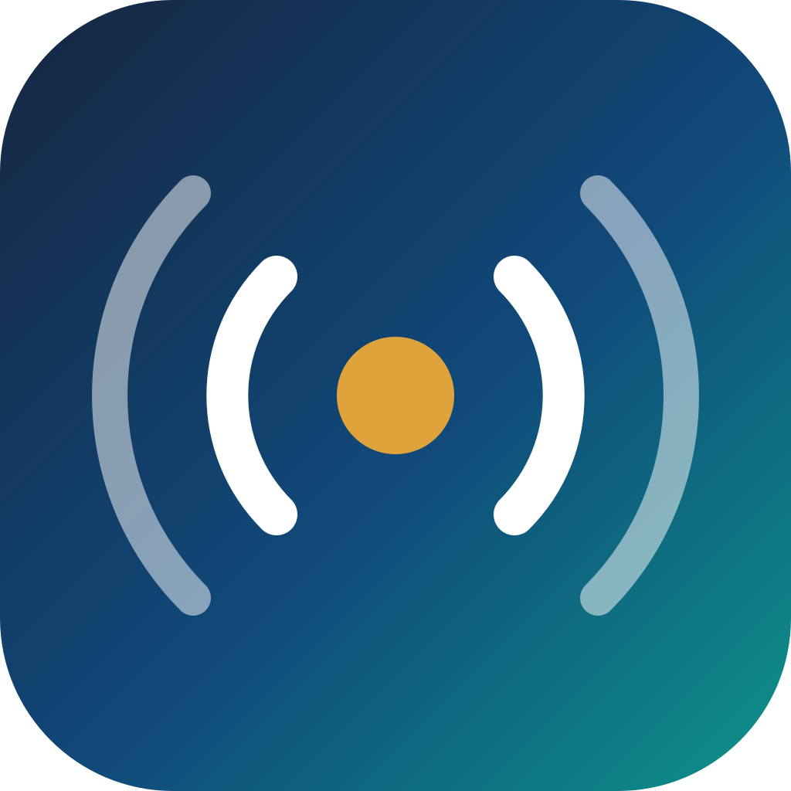

<!DOCTYPE html>
<html lang="fr">
<head>
<meta charset="utf-8">
<title>EMtools — Livret</title>
<style>
:root{--navy:#16243d;--navy2:#0f3a4d;--teal:#0d9488;--teal2:#0f766e;--mint:#5eead4;
  --text:#1e293b;--text2:#64748b;--muted:#94a3b8;--border:#e2e8f0;--bg:#f8fafc;--card:#fff;--gold:#d97706}
*{box-sizing:border-box;margin:0;padding:0}
html,body{background:#525866}
body{font-family:-apple-system,BlinkMacSystemFont,'Segoe UI',Roboto,Helvetica,sans-serif;color:var(--text);-webkit-print-color-adjust:exact;print-color-adjust:exact}
@page{size:A4;margin:0}
.page{position:relative;width:210mm;height:297mm;background:#fff;overflow:hidden;page-break-after:always;break-after:page;padding:16mm 16mm 14mm}
.page:last-child{page-break-after:avoid;break-after:avoid}
/* screen preview: stack pages with a gap */
@media screen{.page{margin:10mm auto;box-shadow:0 6px 30px rgba(0,0,0,.35)}}
@media print{.page{height:296mm}}

/* running header / footer */
.rh{position:absolute;top:8mm;left:16mm;right:16mm;display:flex;justify-content:space-between;font-size:8.5pt;color:var(--muted);letter-spacing:.04em}
.rf{position:absolute;bottom:7mm;left:16mm;right:16mm;display:flex;justify-content:space-between;font-size:8.5pt;color:var(--muted)}
.rf b{color:var(--teal2)}

/* ---------- COVER ---------- */
.cover{padding:0;background:linear-gradient(150deg,#16243d 0%,#0f3a4d 55%,#0f766e 100%);color:#fff}
.cover .in{position:absolute;inset:0;padding:34mm 24mm;display:flex;flex-direction:column}
.cover .logo{width:30mm;height:30mm;border-radius:14px;margin-bottom:14mm}
.cover .kick{font-size:11pt;font-weight:700;letter-spacing:.28em;text-transform:uppercase;color:var(--mint)}
.cover h1{font-size:33pt;font-weight:800;line-height:1.08;letter-spacing:-.02em;margin:6mm 0 0}
.cover .sub{font-size:13.5pt;color:#cbd5e1;margin-top:7mm;max-width:130mm;line-height:1.5}
.cover .spacer{flex:1}
.cover .stats{display:flex;gap:14mm;margin-bottom:12mm}
.cover .stats .n{font-size:24pt;font-weight:800}.cover .stats .l{font-size:9pt;color:var(--muted);text-transform:uppercase;letter-spacing:.06em}
.cover .by{font-size:10.5pt;color:#cbd5e1;line-height:1.6;border-top:1px solid rgba(255,255,255,.2);padding-top:7mm}
.cover .by b{color:#fff}
.cover .url{font-size:15pt;font-weight:800;color:var(--mint);margin-top:3mm}

/* ---------- INTRO PAGE ---------- */
.h2{font-size:20pt;font-weight:800;color:var(--navy);letter-spacing:-.01em}
.lead{font-size:11pt;line-height:1.6;color:var(--text);margin-top:5mm}
.lead b{color:var(--navy)}
.why{display:grid;grid-template-columns:1fr 1fr;gap:5mm;margin-top:9mm}
.why .c{background:var(--bg);border:1px solid var(--border);border-left:3px solid var(--teal);border-radius:9px;padding:5mm 5mm}
.why .c h4{font-size:11pt;color:var(--navy);margin-bottom:1.5mm}
.why .c p{font-size:9.5pt;color:var(--text2);line-height:1.5}
.toc{margin-top:10mm}
.toc h3{font-size:11pt;text-transform:uppercase;letter-spacing:.12em;color:var(--teal2);margin-bottom:4mm}
.toc ol{list-style:none}
.toc li{display:flex;align-items:center;gap:3mm;padding:2.6mm 0;border-bottom:1px dotted var(--border);font-size:11pt;color:var(--text)}
.toc li .ic{font-size:13pt;width:8mm;text-align:center}
.toc li .nm{font-weight:700;color:var(--navy)}
.toc li .ct{margin-left:auto;color:var(--text2);font-size:9.5pt}
.toc li .pg{margin-left:5mm;color:var(--teal2);font-weight:700;width:8mm;text-align:right}

/* ---------- DOMAIN PAGE ---------- */
.dh{display:flex;align-items:center;gap:4mm;margin-top:4mm}
.dh .ic{font-size:22pt}
.dh h2{font-size:19pt;font-weight:800;color:var(--navy);letter-spacing:-.01em}
.drule{height:3px;border-radius:3px;margin:4mm 0 5mm;background:var(--dc,#0d9488)}
.dintro{font-size:10.5pt;line-height:1.55;color:var(--text2);margin-bottom:6mm}
.cols{display:flex;gap:8mm}
.colL{flex:0 0 56%;max-width:56%}
.colR{flex:1;min-width:0}
.tcard{border:1px solid var(--border);border-left:3px solid var(--dc,#0d9488);border-radius:8px;padding:3.4mm 4mm;margin-bottom:3.4mm;background:#fff}
.tcard .n{font-size:10.5pt;font-weight:700;color:var(--navy)}
.tcard .n .e{margin-right:2mm}
.tcard .p{font-size:9pt;color:var(--text2);line-height:1.45;margin-top:1mm}
/* featured screenshot framed as an app window */
.feat{border:1px solid var(--border);border-radius:10px;overflow:hidden;box-shadow:0 3px 16px rgba(22,36,61,.12);background:#fff}
.feat .bar{display:flex;align-items:center;gap:2.5mm;padding:2.4mm 3.4mm;background:#0f1d33}
.feat .dots{display:flex;gap:1.4mm}.feat .dots i{width:2.6mm;height:2.6mm;border-radius:50%;display:block}
.feat .ttl{font-size:8.5pt;color:#e2e8f0;font-weight:700;white-space:nowrap;overflow:hidden;text-overflow:ellipsis}
.feat img{width:100%;display:block}
.feat figcaption{padding:3mm 3.4mm;font-size:8.5pt;color:var(--text2);line-height:1.45;border-top:1px solid var(--border)}
.feat figcaption b{color:var(--navy)}
.tag{display:inline-block;font-size:8pt;font-weight:700;color:var(--dc,#0d9488);text-transform:uppercase;letter-spacing:.08em;margin-bottom:2.5mm}

/* ---------- CLOSING ---------- */
.close{background:linear-gradient(150deg,#0f766e,#16243d);color:#fff;padding:0}
.close .in{position:absolute;inset:0;padding:30mm 24mm;display:flex;flex-direction:column}
.close h2{font-size:24pt;font-weight:800;color:#fff}
.close .lead{color:#cbd5e1;font-size:12pt;max-width:135mm}
.close .grid{display:grid;grid-template-columns:1fr 1fr;gap:6mm;margin-top:10mm}
.close .b{background:rgba(255,255,255,.07);border:1px solid rgba(255,255,255,.18);border-radius:10px;padding:6mm}
.close .b h4{color:var(--mint);font-size:11pt;margin-bottom:2mm}
.close .b p{font-size:9.5pt;color:#cbd5e1;line-height:1.5}
.close .spacer{flex:1}
.close .contact{border-top:1px solid rgba(255,255,255,.2);padding-top:7mm;font-size:11pt;line-height:1.8}
.close .contact a{color:var(--mint);text-decoration:none;font-weight:700}
.close .contact .big{font-size:14pt;font-weight:800;color:#fff}
</style>
</head>
<body>
<div id="book"></div>

<script>
const DOMAINS=[
 {ic:'📡',dc:'#2563eb',fr:{t:'Antennes & rayonnement',i:"Du dipôle au réseau planaire : impédance, diagrammes, gain et formation de faisceau, par la méthode des moments et les modèles analytiques."},
  en:{t:'Antennas & radiation',i:'From the dipole to the planar array: impedance, patterns, gain and beamforming, via the method of moments and analytical models.'},
  img:'catalogue-shots/antennes-filaires.png',ttl:'antennes-filaires.html',
  cap:{fr:'<b>Antennes filaires (MoM)</b> — diagramme de rayonnement, distribution de courant, VSWR et cartographie du champ proche d’un dipôle.',en:'<b>Wire antennas (MoM)</b> — radiation pattern, current distribution, VSWR and near-field map of a dipole.'},
  tools:[['📡','Antennes filaires (MoM)','Dipôle, monopôle, Yagi-Uda : impédance, VSWR, diagramme, champ proche.'],
         ['📶','Réseaux d’antennes','Réseau linéaire : facteur de réseau, dépointage électronique, lobes.'],
         ['▦','Réseau planaire 2D','Dépointage en azimut/élévation, diagramme 3D, contrôle du lobe.'],
         ['📣','Antennes cornet','Cornet pyramidal : gain, efficacité, erreur de phase, plans E/H.'],
         ['▭','Antennes patch','Microruban : synthèse W/L, résonance, directivité, bande passante.'],
         ['🗼','Antennes MIMO','Matrice de canal, capacité de Shannon, multiplexage spatial.']]},

 {ic:'🛰️',dc:'#0d9488',fr:{t:'Radar, RF, télécoms & sécurité',i:'Détection, localisation et liaisons sans fil — du radar au GPS, en passant par l’exposition RF et la RFID.'},
  en:{t:'Radar, RF, telecom & safety',i:'Detection, localisation and wireless links — from radar to GPS, RF exposure and RFID.'},
  img:'catalogue-shots/gps.png',ttl:'gps.html',
  cap:{fr:'<b>GPS — trilatération</b> : positionnement par 4 satellites (coordonnées x, y, z et biais d’horloge).',en:'<b>GPS — trilateration</b>: positioning from 4 satellites (x, y, z coordinates and clock bias).'},
  tools:[['🛰️','Radar','Équation du radar (1/R⁴), Doppler, SER/RCS, FMCW range-Doppler, furtivité.'],
         ['📱','Téléphonie & sécurité RF','1G→6G, ICNIRP, PIRE, distances de sécurité, cartographie de station.'],
         ['🌐','GPS','Trilatération (4 satellites), constellation & GDOP, code C/A, relativité.'],
         ['📶','RFID / NFC — HF & UHF','Couplage inductif 13,56 MHz, codage du signal, rétrodiffusion UHF.']]},

 {ic:'〰️',dc:'#7c3aed',fr:{t:'Lignes, circuits & puissance',i:'La propagation guidée et l’électronique : adaptation d’impédance, analyse de circuits et bilans de puissance.'},
  en:{t:'Lines, circuits & power',i:'Guided propagation and electronics: impedance matching, circuit analysis and power budgets.'},
  img:'catalogue-shots/lignes.png',ttl:'lignes.html',
  cap:{fr:'<b>Lignes de transmission</b> — abaque de Smith, onde stationnaire (TOS) et adaptation par stub.',en:'<b>Transmission lines</b> — Smith chart, standing wave (VSWR) and stub matching.'},
  tools:[['〰️','Lignes & guides d’onde','TOS, abaque de Smith, stubs ; microstrip/CPW/coax ; guide, fibre.'],
         ['⚡','Circuit — SPICE light','Schéma + netlist, Bode/transitoire/DC (MNA), BJT-MOS, AOP, auto-routage A*.'],
         ['📊','Puissances — mW, dBm, dB','Conversions, échelle de référence, gains en dB, bilan de liaison de Friis.']]},

 {ic:'🧲',dc:'#d97706',fr:{t:'Magnétisme & énergie',i:'Champs magnétiques et conversion d’énergie : des bobines au photovoltaïque et au transfert de puissance sans fil.'},
  en:{t:'Magnetism & energy',i:'Magnetic fields and energy conversion: from coils to photovoltaics and wireless power transfer.'},
  img:'catalogue-shots/photovoltaique.png',ttl:'photovoltaique.html',
  cap:{fr:'<b>Photovoltaïque</b> — courbes I-V / P-V, point de puissance maximale, effet de l’ensoleillement et comparaison des technologies.',en:'<b>Photovoltaics</b> — I-V / P-V curves, maximum power point, irradiance effect and technology comparison.'},
  tools:[['🧲','Bobines de Helmholtz','Champ axial d’une/deux bobines, condition de Helmholtz, zone d’uniformité.'],
         ['🍩','Solénoïde & toroïdes','Lignes de champ 3D, profil axial, confinement (hélice, toroïde collisionneur).'],
         ['🔋','Recharge sans fil (WPT)','Couplage inductif/résonant (k·Q) ou radiatif (rectenna) — toute la chaîne.'],
         ['☀️','Photovoltaïque','Modèle à une diode, courbe I-V/P-V, MPPT, ombrage, comparaison technos.']]},

 {ic:'🩻',dc:'#db2777',fr:{t:'Dosimétrie, santé & imagerie',i:'L’interaction des champs avec le vivant : du DAS à l’échauffement des tissus et à l’imagerie médicale.'},
  en:{t:'Dosimetry, health & imaging',i:'Field–tissue interaction: from SAR to tissue heating and medical imaging.'},
  img:'catalogue-shots/irm.png',ttl:'irm.html',
  cap:{fr:'<b>IRM</b> — fréquence de Larmor et carte d’inhomogénéité du champ B₁ dans la tête.',en:'<b>MRI</b> — Larmor frequency and B₁-field inhomogeneity map in the head.'},
  tools:[['🌡️','Dosimétrie EM','Du champ E au DAS puis à l’échauffement (Pennes 2D) ; import CST, validation SAR.'],
         ['🧍','Dosimétrie sur fantôme voxel','Fantôme voxélisé → ε/σ/ρ par tissu → SAR (TMM) → échauffement ; import XCAT.'],
         ['🧠','IRM — comment ça marche','Larmor, Bloch, encodage, k-space (FFT), contraste T1/T2, SAR & implants.']]},

 {ic:'⚙️',dc:'#0891b2',fr:{t:'Capteurs, systèmes & matériaux',i:'De la mesure au matériau : MEMS, optique, chaîne d’acquisition, compatibilité électromagnétique et métamatériaux.'},
  en:{t:'Sensors, systems & materials',i:'From sensing to materials: MEMS, optics, acquisition chain, EMC and metamaterials.'},
  img:'catalogue-shots/cloaking.png',ttl:'cloaking.html',
  cap:{fr:'<b>Méta-matériaux</b> — cape d’invisibilité de Pendry : compression de l’espace autour de l’objet caché.',en:'<b>Metamaterials</b> — Pendry invisibility cloak: compression of space around the hidden object.'},
  tools:[['⚙️','MEMS électrostatiques','Pull-in, peigne interdigité, dynamique f₀/Q, écran tactile capacitif.'],
         ['🔬','Capteurs optiques & imagerie','Responsivité R(λ), spectromètre, couleur (CIE), NDVI, démosaïquage de Bayer.'],
         ['📈','Capteurs & chaîne d’acquisition','Transducteur, pont de Wheatstone, échantillonnage/Nyquist, quantification CAN.'],
         ['📡','CEM','Diaphonie NEXT/FEXT, modes CM/DM, émission vs CISPR, blindage, ESD.'],
         ['🫥','Méta-matériaux','Propriétés effectives artificielles ; cape de Pendry (optique de transformation).']]}
];

const LEX={
 fr:{kick:'Catalogue des outils',title:'Simulateurs interactifs d’électromagnétisme & de physique appliquée',
   sub:'25 outils web rigoureux, autonomes et bilingues — pour comprendre, enseigner et concevoir.',
   s_tools:'outils',s_dom:'domaines',s_lang:'bilingue',
   by:'<b>Hakeim Talleb</b>, Professeur des Universités à Sorbonne Université, spécialiste de la modélisation en physique de l’ingénierie en électronique. Édité par <b>NovaSens Expertise</b>.',
   intro_h:'Pourquoi EMtools',
   lead:'<b>EMtools</b> rend <b>visibles et manipulables</b> les concepts d’électromagnétisme, de télécommunications, de capteurs, de dosimétrie et de compatibilité électromagnétique. Chaque outil tient dans une seule page, tourne dans <b>n’importe quel navigateur sans installation</b>, et repose sur des <b>modèles physiques validés numériquement</b>. Conçus pour l’<b>enseignement</b> comme pour l’<b>ingénierie</b>.',
   why:[['✓ Validé numériquement','Chaque modèle est confronté à la théorie, aux normes ou à des cas tests de référence — pas une boîte noire.'],
        ['⚡ Sans installation','100 % navigateur, une page par outil, utilisable hors-ligne. Rien à configurer.'],
        ['🌐 Bilingue FR / EN','Bascule instantanée des langues, pensée pour la diffusion internationale.'],
        ['🔧 Extensible','Marque blanche, modules sur mesure et intégration via NovaSens Expertise.']],
   toc:'Sommaire',ex:'Exemple de résultat',hdr:'EMtools · Catalogue',
   close_h:'Pour les institutions & les entreprises',
   close_lead:'Au-delà de l’accès libre, EMtools se décline pour vos besoins.',
   close_b:[['Établissements','Accès aux modules pour vos enseignements, abonnement annuel, version maintenue.'],
            ['Intégration produit','Modules (dosimétrie, CEM…) validés et documentés pour vos dossiers — V&V à l’appui.'],
            ['Marque blanche','Habillage à vos couleurs, sur votre domaine, avec vos cas d’usage.'],
            ['Sur mesure','Nouveaux modules et développements spécifiques selon votre cahier des charges.']],
   declare:'Se déclarer / demander un accès',licence:'Licence (gratuite ou commerciale) à la carte — accordée par NovaSens Expertise.'},
 en:{}
};
const T=LEX.fr;

function coverPage(){
 return `<section class="page cover"><div class="in">
   
   <div class="kick">${T.kick}</div>
   <h1>EMtools</h1>
   <div class="sub">${T.title}.<br>${T.sub}</div>
   <div class="spacer"></div>
   <div class="stats">
     <div><div class="n">25</div><div class="l">${T.s_tools}</div></div>
     <div><div class="n">6</div><div class="l">${T.s_dom}</div></div>
     <div><div class="n">FR/EN</div><div class="l">${T.s_lang}</div></div>
   </div>
   <div class="url">🌐 emtools.app</div>
   <div class="by">${T.by}<br>contact@novasensexpertise.com · © 2026</div>
 </div></section>`;
}

function introPage(){
 const why=T.why.map(w=>`<div class="c"><h4>${w[0]}</h4><p>${w[1]}</p></div>`).join('');
 let pg=3;
 const toc=DOMAINS.map(d=>`<li><span class="ic">${d.ic}</span><span class="nm">${d.fr.t}</span><span class="ct">${d.tools.length} outils</span><span class="pg">${pg++}</span></li>`).join('');
 return `<section class="page">
   <div class="rh"><span>${T.hdr}</span><span>emtools.app</span></div>
   <h2 class="h2">${T.intro_h}</h2>
   <p class="lead">${T.lead}</p>
   <div class="why">${why}</div>
   <div class="toc"><h3>${T.toc}</h3><ol>${toc}</ol></div>
   <div class="rf"><span>par Hakeim Talleb · NovaSens Expertise</span><span>2</span></div>
 </section>`;
}

function domainPage(d,idx,pageno){
 const tools=d.tools.map(t=>`<div class="tcard"><div class="n"><span class="e">${t[0]}</span>${t[1]}</div><div class="p">${t[2]}</div></div>`).join('');
 return `<section class="page" style="--dc:${d.dc}">
   <div class="rh"><span>${T.hdr}</span><span>${d.fr.t}</span></div>
   <div class="dh"><span class="ic">${d.ic}</span><h2>${d.fr.t}</h2></div>
   <div class="drule"></div>
   <p class="dintro">${d.fr.i}</p>
   <div class="cols">
     <div class="colL">${tools}</div>
     <div class="colR">
       <div class="tag">${T.ex}</div>
       <figure class="feat">
         <div class="bar"><span class="dots"><i style="background:#ff5f57"></i><i style="background:#febc2e"></i><i style="background:#28c840"></i></span><span class="ttl">emtools.app/${d.ttl}</span></div>
         
         <figcaption>${d.cap.fr}</figcaption>
       </figure>
     </div>
   </div>
   <div class="rf"><span><b>EMtools</b> — emtools.app</span><span>${pageno}</span></div>
 </section>`;
}

function closePage(){
 const b=T.close_b.map(x=>`<div class="b"><h4>${x[0]}</h4><p>${x[1]}</p></div>`).join('');
 return `<section class="page close"><div class="in">
   <h2>${T.close_h}</h2>
   <p class="lead">${T.close_lead}</p>
   <div class="grid">${b}</div>
   <div class="spacer"></div>
   <div class="contact">
     <div class="big">🌐 emtools.app</div>
     📝 ${T.declare} · <a href="https://tally.so/r/Bz967N">tally.so/r/Bz967N</a><br>
     ✉ <a href="mailto:contact@novasensexpertise.com">contact@novasensexpertise.com</a><br>
     <span style="font-size:9.5pt;color:#94a3b8">${T.licence}</span>
   </div>
 </div></section>`;
}

let html=coverPage()+introPage();
DOMAINS.forEach((d,i)=>{html+=domainPage(d,i,i+3);});
html+=closePage();
document.getElementById('book').innerHTML=html;
</script>
</body>
</html>
